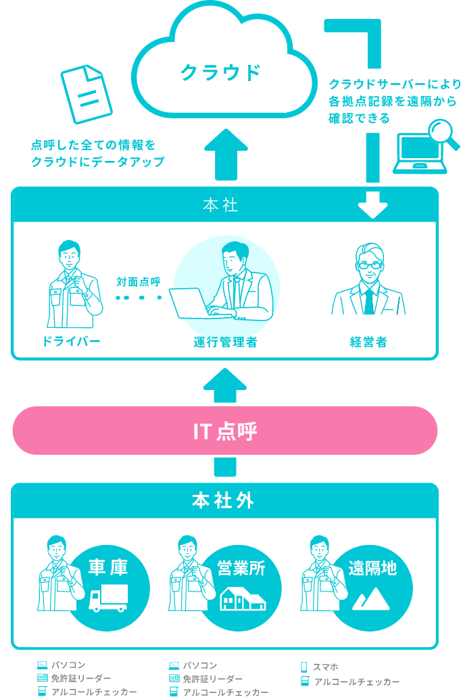
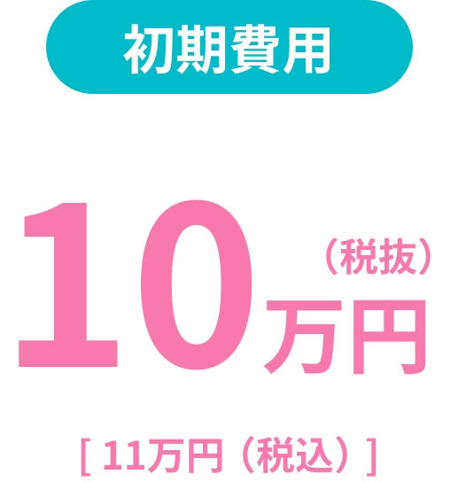
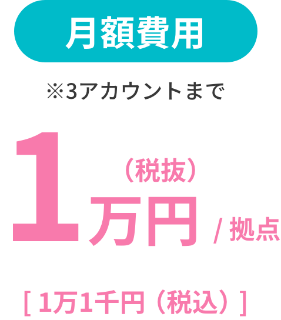

IT点呼キーパーとは？
IT点呼キーパーで
点呼結果を
クラウド一括管理。
業務効率化
・
人的負担軽減
・
虚偽報告防止
など、
安心安全な運行管理を実現します。
IT点呼キーパーが
選ばれる
6
つの理由
操作が簡単
費用が安い
クラウド
サーバー管理
国土交通省の
認定機器
安心の
セキュリティ
点呼簿等の
手作業解消
IT点呼キーパーなら
こんな
お悩みも解決！
IT点呼キーパーによる
仕組み・点呼業務の流れ

IT点呼キーパーを
導入する
メリット
運行管理者のメリット
-
1
運行管理者が車庫にいなくても 、営業所からドライバーと IT点呼により顔を見ながら点呼 ができます。
-
2
点呼結果が自動でクラウンに保存され、 管理がスムーズ になります。
-
3
データ化 された点呼結果から 点呼記録簿が作成 できます。
-
4
点呼結果・点呼記録簿は いつでもどこでも確認・出力 できるので、 監査の時も慌てず対応 できるようになります。

ドライバーのメリット
-
1
対面点呼のために 離れた営業所まで向かう時間が削減 されます。
-
2
遠隔地の場合でも スマートフォンで点呼 ※ が行えます。 ※オプション

経営者のメリット
-
1
点呼結果が自動でクラウンに保存・管理 されるので、 改ざん・不正利用防止 に繋がります。
-
2
営業所ごとにバラついていた 点呼の質が均一化 され、 点呼簿の質が向上 されます。
-
3
クラウド化により、 ペーパーレスで経費削減 に繋がります。
国土交通省認定のIT点呼システム
IT点呼キーパーは
高性能なのに低価格！


（初期登録の費用とソフトウェア利用ライセンス費用が含まれます。）
※1拠点につき3アカウントまで。4アカウント以上を希望される場合、別途有償になります。
※お支払いにつきましては、12ヶ月一括払い
もご選択いただけます。
追加プラン（初期費用不要）
- スマホ点呼アプリ・・・
- 5台毎に3,300円の追加料金が必要です。 ※スマートフォン本体価格、及び通話料、通信料は含みません。
| スマホ台数 | 月額維持費用 |
|---|---|
| 5台迄 | 3,000円（税抜） [3,300円（税込）] |
| 10台迄 | 6,000円（税抜） [6,600円（税込）] |
| 15台迄 | 9,000円（税抜） [9,900円（税込）] |
| 20台迄 | 12,000円（税抜） [13,200円（税込）] |
| 25台迄 | 15,000円（税抜） [16,500円（税込）] |
- 血圧計連携プラン・・・
- 月額維持費用2,000円（税抜）/ 拠点 [2,200円（税込）] 3アカウント迄 ※1拠点につき3アカウントまで。別途アカウントが必要な場合は別途2,000円を頂戴いたします。
お問い合わせ
製品の詳しいご相談・資料請求は
下記のお問合せ専用フォームまたはお電話にてお気軽にお問合せください。
受付時間：月曜日～金曜日 9:00～ 18：00 ※土日祝日は休業
導入まで
最短２週間
-
STEP01
お問い合わせ
お電話・WEBからお問い合わせください。
最短で即日もしくは翌営業日までに対応！ お見積もりが必要な場合はお申し付けください。
-
STEP02
ご訪問・ご提案
ご相談内容に応じて担当者がご訪問させていただき、無料デモンストレーションを行いながらご説明させて頂きます。
-
STEP03
お申込み
ご登録の際に必要な情報をいただきます。 その後、お客様専用のアカウントを発行します。
-
STEP04
ご利用開始
お申込書受領後、スタッフがお伺いし初期設定を行い、お手続き完了です。 その後のアフターサポートもお任せください！
IT点呼キーパー
対応機器
IT点呼キーパーはアルコール検知器・血圧計との連携可能。
測定結果の自動保存・CSVファイル出力など、業務効率化をサポートする便利な機能を搭載。
IT点呼キーパーに対応する
アルコール検知器
- フィガロ技研株式会社
- FuGo-Pro FALC-11
- 株式会社東洋マーク製作所
-
AC-011IT
AC-015IT
AC-015BT
AC-018
- サンコーテクノ株式会社
- ST-3000
IT点呼キーパーに対応する
血圧機
- オムロンヘルスケア株式会社
-
健太郎HBP-9031C
健太郎HBP-9030
- 株式会社エー・アンド・デイ
- 診之助Slim TM-2657P
- 株式会社タニタ
-
業務用全自動血圧計
BP-910
人手不足が深刻化しているトラック
運送業界だからこそ、
これまでの業務を見直しIT点呼を
導入してみませんか？
IT点呼を導入後
点呼業務の時間を
約
33
%削減※可能!
本社から車庫まで、点呼のためだけに天候が悪い日も車庫まで行かないといけないのは非常に大変です。
IT点呼を導入してから、 点呼実施者の負担が軽減され、時間短縮ができます。
専任の運行管理者がいない、でも専任を雇用することも難しく、ドライバー が運行管理者の仕事を兼務で行っているという場合。
IT点呼を導入を導入すれば、 ドライバーは本業 に専念できるようになり、また兼務による ドライバーへの業務負担を解消できます。
※3拠点で24時間稼働を行っているGマーク取得企業の場合
お問い合わせ
製品の詳しいご相談・資料請求は
下記のお問合せ専用フォームまたはお電話にてお気軽にお問合せください。
受付時間：月曜日～金曜日 9:00～18:00 ※土日祝日は休業